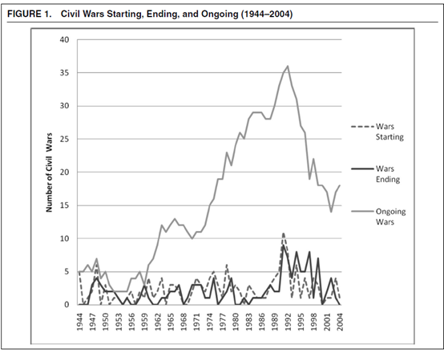
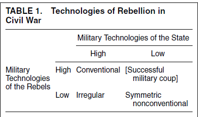
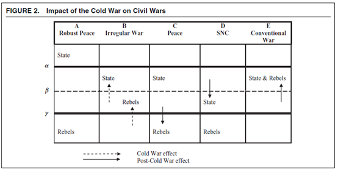
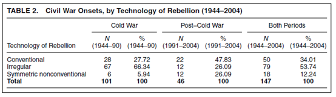
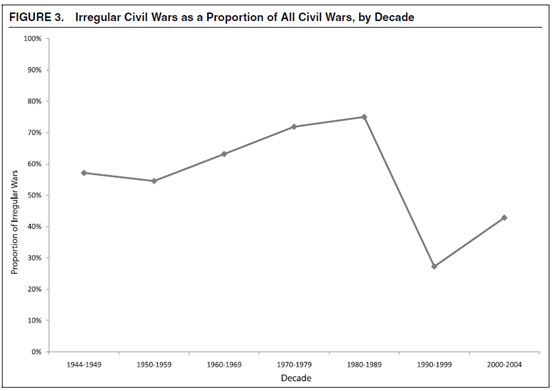
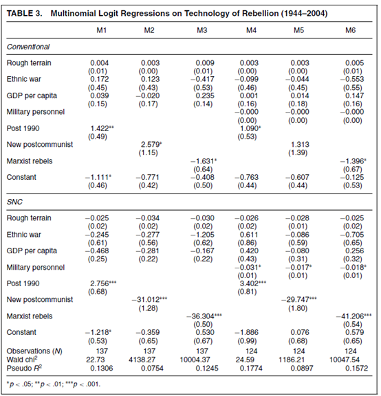

收录于合集
以下文章来源于Politicall理论志 ，作者曲翔瑞
Politicall理论志 .
搜索“理论志”，发现新学术：七万余社会学人、政治学人、国政学人、政经学人共同关注的学术平台。目前，我们主力追踪国内外社会学、政治学、国际政治与政经济研究新动态。

作品简介
作者： STATHIS N. KALYVAS, 牛津大学政治与国际关系系
来源： Kalyvas, Stathis, and Lisa Balcells. 2010.“International System and Technologies of Rebellion: How the End of the Cold W arShaped Internal Conflict.” American Political Science Review 104(3): 415-429
内容提要
因为内战主要是国内冲突，内战研究也主要强调国内因素。与前人相反，本文探寻的是国际体系是否，以及如何塑造内战。本文发现，国际体系塑造了内战的战争方式，改变了“叛乱路径”（technologies of rebellion）。在将内战区分为非常规战争（或叛乱），常规战争和对称的非常规战争后，本文发现，冷战结束后的内战中，非常规战争的数量显着下降，这标志了内战的范式转变。本文的研究价值在于，将国际体系因素带入对国内战争的冲突研究中，建立了国内冲突与冷战的关系。另一方面，本文证明非常规战争不是内战的范式，而是冷战结构特征的体现。
01
数据建构
为了构建本文的数据集，作者基于Sambanis (2001)的内战数据集，更新至2004 年，并进行了一些修改，具体有如下内容。其一，降低标准为以下5点：(1)整个战争期间或至少一年的冲突中，与战争有关的死亡人数超过1000人；(2)战争挑战了国际公认的主权化国家；(3)它发生在该国领土内；(4)国家军队是主要战斗人员之一；(5)叛乱分子能够发动有组织的军事行动反对国家政权。数据显示，进行中的内战数在1950年代后期后稳步上升，并在1990年代初达到顶峰；内战的爆发也在1991年达到顶峰。紧接在1991年之后，内战的数量开始下降。数据如下所示。

02
三种反叛路径
内战并非只有一种范式，而是具有极大异质性的。文章基于不同的反叛路径，将内战分为三种，如下图。

当国家和叛军的军事技术在高水平上相平衡时，就表现为常规内战。此时，叛军有能力在军事上使用重武器的对抗国家军队，比如野战炮兵和装甲兵。在常规战争中，军事对抗是直接的，具有清晰的前线和武装纵队。冲突通常采取集团战、堑壕战和城镇围攻。经典案例包括美国内战（1861-65）和西班牙内战（1936-39）。更多近期的例子包括尼日利亚的比夫拉冲突（1967-70），格鲁吉亚的阿布哈兹冲突（1992-94），以及前南斯拉夫的克罗地亚和波斯尼亚战争（1992-95）等等。
当国家的军事技术远高于叛军时，内战就表现为内战就表现为“非常规内战”。叛军拥有军事骚扰的能力，但缺乏以直接和正面的方式面对国家军队的能力。因此，叛军唯一的选择是不对称地战斗。游击战就是这一内战的典型代表。
在一些少见的情况下，双方的军事实力在低水平相平衡时，非对称非常规（SNC）内战。此时，国家无法或者不愿意部署有组织的军队对付叛乱分子，尽管他们的装备也十分简陋。SNC战争往往发生在极具特征的，政权极弱或崩溃的背景下，如刚果- 布拉柴维尔内战（1993-97）
当叛乱者的军事实力远超国家时，就会表现为成功的军事政变而不是内战。
03
冷战与内战
冷战的结束导致了以下三点变化（1）反叛能力下降，（2）国家能力下降（3）新国家的出现。他们改变了内战的叛乱路径。首先，冷战的结束决定性地伤害了叛军。它结束了超级大国的竞争，也结束了苏联本身，以及依靠其丰富的物资供应支持的世界各反叛势力。在反叛者中，冷战的结束不成比例地伤害了革命者类型，因为它摧毁了政治信仰和跨国支持它的社会运动。但是，冷战的结束也削弱了国家能力。随着苏联的威胁消失，美国失去在发展中国家扶持代理人的兴趣，削弱了他们的国家能力。那些被苏联扶持的代理人也瞬间失去了大量援助和意识形态合法性。最后，冷战的结束导致了许多新兴国家的出现，这也削弱了他们原本的国家能力。这些变化对于内战的影响如下图所示。

考虑上述三个因素同时影响国家与叛军的军事实力的情形。第一个阈值α标记了一个国家能力的水平线（大致对应先进工业社会）：高于此水平，国内和平是稳定的（结果 A）。结尾冷战对这些国家没有影响。第二个阈值β标记了高于该阈值的水平国家或叛军能够部署常规军队，并配备重型火炮和装甲车。低于这个门槛，国家或反叛者不能组织部署军团，反叛者表现为分散的组织，国家则被认为是“失败的。”最后，γ标志着反叛能力的阈值，低于该标准的反叛武装则太弱，无法对一个国家发起持续的军事挑战，例如土匪、黑手党等。
内战只发生在阈值α以下的区域，但它的形式因国家军队和反叛者的能力不同各异。一种情况是，冷战提高了反叛能力到γ之上，从而增加非常规战争的可能性（结果 B）。与之相反，冷战结束将许多潜在的叛军推到低于阈值γ，因此保护许多国家免受叛乱的影响（结果 C）。与此同时，冷战战争导致能力低的国家（此前受到超级大国支持）低于β。位于γ下方的叛军现在能够挑战这些弱化的国家，引发SNC战争（结果D）。最后，冷战结束后的国家分裂使得叛军可以移动到阈值β以上，并进行常规战争（结果 E）。
04
实证结果
实证数据为这一逻辑提供了支持。基于1944年至2004年147次内战的数据，文章发现，冷战期间，非常规内战是主导范式，而冷战后SNC内战和常规内战的比例则显著增加，非常规内战占比大大减小。结果如下所示。


最后，运用多元线性回归，文章进一步验证了导致三种内战范式的各个因素，其中包括地形、种族因素、经济状况、叛军的政治倾向、叛乱发生的国家是否为新兴国家等。回归结果支持了上述推论。

05
结论
本文的分析表明，冷战的结束对内战范式的变更产生了巨大的影响，标志了非常规内战范式的式微。同时，内战的类型由内战双方的军事实力塑造。文章强调内战研究，需要连接发生在次国家、国家、跨国和国际系统层面的诸多因素。文章的结论具有政策指导意义，提醒政策制定者注意多种内战爆发的风险。
排版 | 贾希铭
本文章来源于“Politicall理论志”
文章观点不代表本平台观点